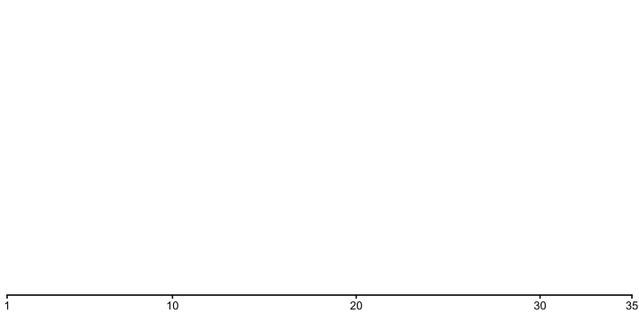
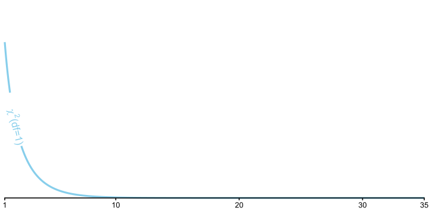
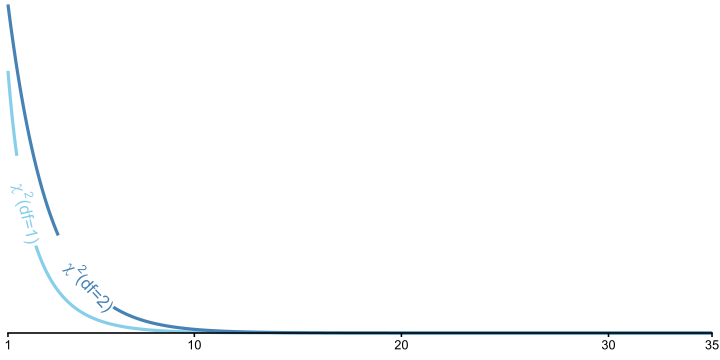
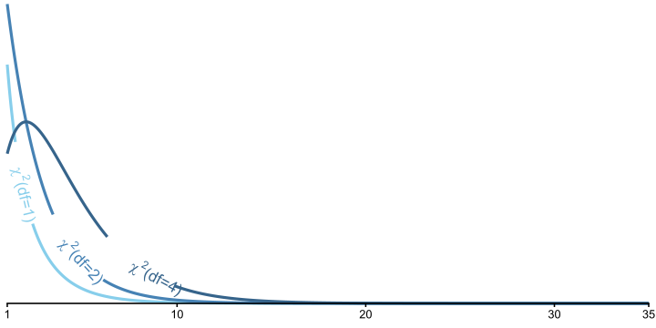
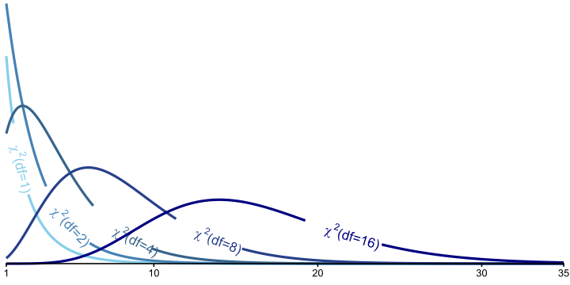
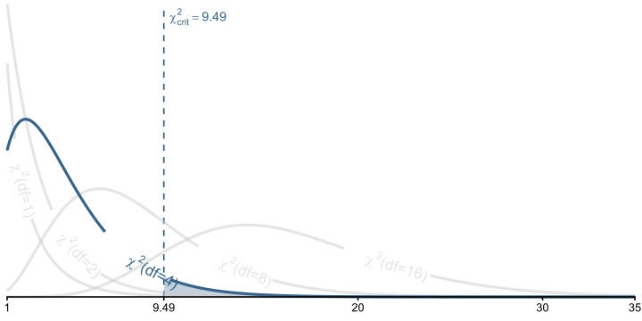
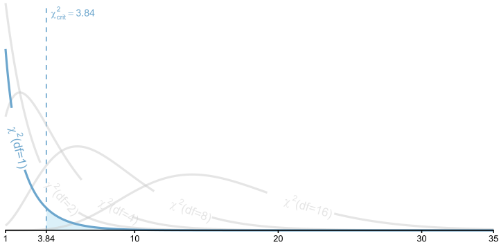

| STEM | Social Sciences | Humanities | Arts | Business | |
|---|---|---|---|---|---|
| Expected | |||||
| Observed |
Chi-Squared Tests
PSYC 6019-A01 / PSYC 6022-A01
2025-09-18 | Lab 4
Jess Helmer
Outline
-
\(\chi^2\) tests
\(\chi^2\) Test of Goodness of Fit
\(\chi^2\) Test of Independence
Working with count data
Chi-Squared (\(\chi^2\)) Test
Testing inferences about proportions
○ Involve categorical variables
Comparing observed frequencies (counts) to some expected (null hypothesis) frequencies
\(\chi^2\) Test of Goodness of Fit: expected frequencies are set by researcher (e.g., null hypothesis is equal frequencies across all groups)
\(\chi^2\) Test of Independence: expected frequencies are those implied by independence
Chi-Squared (\(\chi^2\)) Test
Instead of a continuous variable, our outcome is a count
Continuous
Height
Petal length
Test score
Counts
Coin flip being heads
Number of pets
Goals scored
Only integers
\(\chi^2\) Test of Goodness of Fit
\(\chi^2\) Test of Goodness of Fit
Do the observed frequencies of a categorical variable differ from what expected a priori?
Typically, this expectation is equal occurrence across groups (but doesn’t have to be).
If equal occurrence, what would be our expected frequencies?
100 coin flips
| Heads | Tails |
|---|---|
| 50 | 50 |
Favorite primary color of 33 students
| Red | Blue | Yellow |
|---|---|---|
| 11 | 11 | 11 |
Can also hypothesize proportions and convert to frequencies once you have a sample size.
\(\chi^2\) Test of Goodness of Fit: Hypotheses
\(H_0\): Observed data match the expected frequencies for the population
\(H_1\): Observed data do not match the expected frequencies for the population
○ Observed frequency is significantly different than expected
\(H_0\): \(\pi_j = \pi_{j_0}\) for all categories \(j\) (i.e., difference for all categories is 0), where
\(\pi_j\) = observed proportion
\(\pi_{j_0}\) = expected proportion
\(H_1\): \(\pi_j \neq \pi_{j_0}\) for any category \(j\)
\(\chi^2\) Test of Goodness of Fit
\[ \chi^2 = \sum_{j=1}^{J} \frac{(O_j – N\pi_{j_0})^2}{N\pi_{j_0}} = \sum_{j=1}^{J} \frac{(O_j – E_j)^2}{E_j} \]
where
\(O_j\) = observed frequency
\(N\) = total sample size
\(E_j\) = expected frequency
\(j\) = individual category out of \(J\) total categories
The sum of the squared differences between the observed and expected frequencies, divided by the expected frequency, for each group.
\(\chi^2\) Test of Goodness of Fit
\(\text{df} = J - 1\), where
\(J\) = number of categories
Use to identify critical \(\chi^2\) value from R
For \(\chi^2\), as \(\text{df}\) increases, so does the critical-\(\chi^2\) value (at same \(\alpha\))
\(\chi^2\) Distribution

\(\chi^2\) Distribution

\(\chi^2\) Distribution

\(\chi^2\) Distribution

\(\chi^2\) Distribution
\(\chi^2\) Distribution

\(\chi^2\) Test of Goodness of Fit Example
You are an education psychologist interested in college students’ choice of majors. You’ve grouped majors into five categories: STEM, Social Sciences, Humanities, Arts, and Business. You’d like to test whether there are differences in the population of students choosing those majors. You sample 200 students and ask what major they chose.
First, what are your expected frequencies for each category?
\(\chi^2\) Test of Goodness of Fit Example
You are an education psychologist interested in college students’ choice of majors. You’ve grouped majors into five categories: STEM, Social Sciences, Humanities, Arts, and Business. You’d like to test whether there are differences in the population of students choosing those majors. You sample 200 students and ask what major they chose.
First, what are your expected frequencies for each category?
| STEM | Social Sciences | Humanities | Arts | Business | |
|---|---|---|---|---|---|
| Expected | 40 | 40 | 40 | 40 | 40 |
| Observed |
\(\chi^2\) Test of Goodness of Fit Example
You are an education psychologist interested in college students’ choice of majors. You’ve grouped majors into five categories: STEM, Social Sciences, Humanities, Arts, and Business. You’d like to test whether there are differences in the population of students choosing those majors. You sample 200 students and ask what major they chose.
Next, what is your \(\chi^2\) cutoff value?
| STEM | Social Sciences | Humanities | Arts | Business | |
|---|---|---|---|---|---|
| Expected | 40 | 40 | 40 | 40 | 40 |
| Observed |
\(\chi^2\) Test of Goodness of Fit Example
Cutoff in R
df <- 5 - 1
chisq_crit <- qchisq(.95, df)
chisq_crit[1] 9.487729\(\chi^2\) Distribution

\(\chi^2(df \ = \ 4)\) Rejection Region

\(\chi^2\) Test of Goodness of Fit Example
You are an education psychologist interested in college students’ choice of majors. You’ve grouped majors into five categories: STEM, Social Sciences, Humanities, Arts, and Business. You’d like to test whether there are differences in the population of students choosing those majors. You sample 200 students and ask what major they chose.
Now, what are the observed values (after collecting data)?
| STEM | Social Sciences | Humanities | Arts | Business | |
|---|---|---|---|---|---|
| Expected | 40 | 40 | 40 | 40 | 40 |
| Observed |
\(\chi^2\)-test in R
Let’s get some observed values!
Most of the time, we’d get data that looks like this:
# A tibble: 10 × 5
student_id school_type major parent_in_stem age
<dbl> <chr> <chr> <chr> <dbl>
1 1 STEM School STEM No 22
2 2 STEM School Business No 21
3 3 STEM School STEM No 19
4 4 Non-STEM School Arts No 20
5 5 STEM School STEM Yes 22
6 6 Non-STEM School Humanities No 20
7 7 STEM School STEM Yes 21
8 8 STEM School STEM No 22
9 9 Non-STEM School Social Sciences Yes 22
10 10 STEM School Social Sciences Yes 20And does not show the frequencies yet
Count Data: table()
Some ways to generate frequencies from categorical variables
table(major_data$major)
Arts Business Humanities Social Sciences STEM
32 52 32 33 51 Count Data: count()
count(df, grouping_var1, grouping_var2, etc.)
○ df = dataframe
○
grouping_vars = variable names to group by
Basically shorthand for:
df |>
summarise(.by = grouping_var,
n = n())Also seems to arrange by default
Count Data: count()
count(df, grouping_var1, grouping_var2, etc.)
○ df = dataframe
○
grouping_vars = variable names to group by
major_data |>
summarize(.by = major,
n = n())# A tibble: 5 × 2
major n
<chr> <int>
1 STEM 51
2 Business 52
3 Arts 32
4 Humanities 32
5 Social Sciences 33major_data |>
count(major)# A tibble: 5 × 2
major n
<chr> <int>
1 Arts 32
2 Business 52
3 Humanities 32
4 STEM 51
5 Social Sciences 33\(\chi^2\) Test of Goodness of Fit Example
You are an education psychologist interested in college students’ choice of majors. You’ve grouped majors into five categories: STEM, Social Sciences, Humanities, Arts, and Business. You’d like to test whether there are differences in the population of students choosing those majors. You sample 200 students and ask what major they chose.
Here are the observed values:
| STEM | Social Sciences | Humanities | Arts | Business | |
|---|---|---|---|---|---|
| Expected | 40 | 40 | 40 | 40 | 40 |
| Observed | 51 | 33 | 32 | 32 | 52 |
\(\chi^2\) Test of Goodness of Fit Example
\[ \chi^2 = \sum_{j=0}^{J} \frac{(O_j – N\pi_j)^2}{N\pi_j} = \sum_{j=0}^{J} \frac{(O_j – E_j)^2}{E_j} \]
| STEM | Social Sciences | Humanities | Arts | Business | |
|---|---|---|---|---|---|
| Expected | 40 | 40 | 40 | 40 | 40 |
| Observed | 51 | 33 | 32 | 32 | 52 |
We can reject the null in favor of the alternative that the number of students is not the same across majors.
R Function
R has a function for \(\chi^2\)-tests, chisq.test(x). This function wants counted data, either a numeric vector of counts, or a table of the data.
counted_major_data <- major_data |>
count(major)
counted_major_data# A tibble: 5 × 2
major n
<chr> <int>
1 Arts 32
2 Business 52
3 Humanities 32
4 STEM 51
5 Social Sciences 33tabled_major_data <- major_data |>
select(major) |>
table()
tabled_major_datamajor
Arts Business Humanities Social Sciences STEM
32 52 32 33 51 chisq <- counted_major_data |>
select(-major) |>
chisq.test()
chisq
Chi-squared test for given probabilities
data: select(counted_major_data, -major)
X-squared = 11.05, df = 4, p-value = 0.02601chisq <- tabled_major_data |>
chisq.test()
chisq
Chi-squared test for given probabilities
data: tabled_major_data
X-squared = 11.05, df = 4, p-value = 0.02601R Function
chisq$expected Arts Business Humanities Social Sciences STEM
40 40 40 40 40 chisq$statisticX-squared
11.05 chisq$p.value[1] 0.02600779A pretend Quarto document like this:
Will render the text like this:
The \(\chi^2\) statistic was 11.05 with a p-value of 0.03.
This is called “in-line code”.
\(\chi^2\) Test of Goodness of Fit Example
Let’s restart and say that you were a educational psychologist interested in how students in STEM schools choose their major. In this situation, you had expected more students to select a STEM major than other majors.
These are your new expected frequencies (60% STEM, evenly divided across the rest):
| STEM | Social Sciences | Humanities | Arts | Business | |
|---|---|---|---|---|---|
| Expected | 120 | 20 | 20 | 20 | 20 |
| Observed | 51 | 33 | 32 | 32 | 52 |
R Function
chisq.test(x = c(51, 33, 32, 32, 52),
p = c(120, 20, 20, 20, 20),
rescale.p = T)
Chi-squared test for given probabilities
data: c(51, 33, 32, 32, 52)
X-squared = 113.72, df = 4, p-value < 2.2e-16chisq.test(x = c(51, 33, 32, 32, 52),
p = c(.60, .10, .10, .10, .10))
Chi-squared test for given probabilities
data: c(51, 33, 32, 32, 52)
X-squared = 113.72, df = 4, p-value < 2.2e-16○ x = data of frequencies
○ p = expected probabilities
○ rescale.p = [T/F], will rescale p to probabilities if you prefer to input frequencies
We can verify that it calculated the expected frequencies correctly:
chisq.test(x = c(51, 33, 32, 32, 52),
p = c(.60, .10, .10, .10, .10))$expected[1] 120 20 20 20 20\(\chi^2\) Test of Independence
\(\chi^2\) Test of Independence
Do the observed frequencies of a categorical variable differ from what is expected via properties of independence?
○ Now considering more than one type of category
○ E.g., Number of pets by cat vs. dog people and undergrad vs. post-graduate
| Cat Person | Dog Person | |
|---|---|---|
| Undergrad | ||
| Post-Graduate |
Expected frequencies calculated from the marginal totals of the contingency table
○ Expected values determined from data
\(\chi^2\) Test of Independence: Hypotheses
\(H_0\): Categorical Variable 1 and Categorical Variable 2 are independent (i.e., have no association)
\(H_1\): Categorical Variable 1 and Categorical Variable 2 are not independent (i.e., have some association)
○ Do expected frequencies match those expected via independence?
Mathematically the same as before:
\(H_0\): \(\pi_j = \pi_{j_0}\) for all categories \(j\); difference for all categories is 0, where
\(\pi_j\) = observed proportion
\(\pi_{j_0}\) = expected proportion
\(H_1\): \(\pi_j \neq \pi_{j_0}\) for any category \(j\)
Just changing the expected frequencies
\(\chi^2\) Test of Independence
\[ \chi^2 = \sum_{j_1=1}^{J_1}\sum_{j_2=1}^{J_2} \frac{(O_j – N\pi_{j_0})^2}{N\pi_{j_0}} = \sum_{j_1=1}^{J_1}\sum_{j_2=1}^{J_2} \frac{(O_j – E_j)^2}{E_j} \]
Basically identical formula to calculate the \(\chi^2\).
The difference is that our expected frequencies \(E_j\) are derived from the data. Just like before, we calculate the difference from each cell, but now we have two categories that make up the cell.
The sum of the squared differences between the observed and expected frequencies, divided by the expected frequency, for each cell.
\(\chi^2\) Test of Independence Cutoffs
What is the critical \(\chi^2\) value in a test of independence for a 3x2?
\(\text{df} = (J_1 - 1) \times (J_2 - 1)\) or
\(\text{df} = (n_{rows} - 1) \times (n_{cols} - 1)\)
\(\chi^2\) Test of Independence Example
Let’s say that you were a educational psychologist interested in how students choose STEM or non-STEM schools based on whether or not they had a parent go to a STEM or non-STEM school. You sample 200 students.
| Non-Stem School | STEM School | |
|---|---|---|
| No | ||
| Yes |
First, what is your critical \(\chi^2\) value?
df <- (2 - 1) * (2 - 1)
qchisq(0.95, df)[1] 3.841459\(\chi^2\) Distribution

\(\chi^2(df \ = \ 1)\) Rejection Region

\(\chi^2\) Test of Independence Example
Let’s say that you were a educational psychologist interested in how students choose STEM or non-STEM schools based on whether or not they had a parent go to a STEM or non-STEM school. You sample 200 students.
| Non-Stem School | STEM School | |
|---|---|---|
| No | ||
| Yes |
Next, let’s get our observed values!
\(\chi^2\) Test of Independence Observed Values
Let’s look at creating frequency data for more than one variable
major_data |> head(10)# A tibble: 10 × 5
student_id school_type major parent_in_stem age
<dbl> <chr> <chr> <chr> <dbl>
1 1 STEM School STEM No 22
2 2 STEM School Business No 21
3 3 STEM School STEM No 19
4 4 Non-STEM School Arts No 20
5 5 STEM School STEM Yes 22
6 6 Non-STEM School Humanities No 20
7 7 STEM School STEM Yes 21
8 8 STEM School STEM No 22
9 9 Non-STEM School Social Sciences Yes 22
10 10 STEM School Social Sciences Yes 20Count Data: table()
table(major_data$parent_in_stem, major_data$school_type)
Non-STEM School STEM School
No 59 32
Yes 56 53Count Data: count()
count(df, grouping_var1, grouping_var2, etc.)
○ df = dataframe
○
grouping_vars = variable names to group by
major_data |>
summarize(.by = c(parent_in_stem, school_type),
n = n())# A tibble: 4 × 3
parent_in_stem school_type n
<chr> <chr> <int>
1 No STEM School 32
2 No Non-STEM School 59
3 Yes STEM School 53
4 Yes Non-STEM School 56major_data |>
count(parent_in_stem, school_type)# A tibble: 4 × 3
parent_in_stem school_type n
<chr> <chr> <int>
1 No Non-STEM School 59
2 No STEM School 32
3 Yes Non-STEM School 56
4 Yes STEM School 53\(\chi^2\) Test of Independence Example
Let’s say that you were a educational psychologist interested in how students choose STEM or non-STEM schools based on whether or not they had a parent go to a STEM or non-STEM school. You sample 200 students, and these are the frequencies you observe.
| Non-Stem School | STEM School | |
|---|---|---|
| No | 59 | 32 |
| Yes | 56 | 53 |
First, what are your expected frequencies for each category?
Calculating Expected Frequencies
First, get the marginal totals for each column
| Non-Stem School | STEM School | Total | |
|---|---|---|---|
| No | 59 | 32 | |
| Yes | 56 | 53 | |
| Total |
major_data |>
count(parent_in_stem)# A tibble: 2 × 2
parent_in_stem n
<chr> <int>
1 No 91
2 Yes 109major_data |>
count(school_type)# A tibble: 2 × 2
school_type n
<chr> <int>
1 Non-STEM School 115
2 STEM School 85Calculating Expected Frequencies
First, get the marginal totals for each column
| Non-Stem School | STEM School | Total | |
|---|---|---|---|
| No | 59 | 32 | 91 |
| Yes | 56 | 53 | 109 |
| Total | 115 | 85 | 200 |
Calculating Expected Frequencies
| Non-Stem School | STEM School | Total | |
|---|---|---|---|
| No | 59 | 32 | 91 |
| Yes | 56 | 53 | 109 |
| Total | 115 | 85 | 200 |
| Non-Stem School | STEM School | Total | |
|---|---|---|---|
| No | 52.3 | 38.7 | 115 |
| Yes | 62.7 | 46.3 | 85 |
| Total | 115.0 | 109.0 | 200 |
Expected cell frequency = \(E_j\) = \(\frac{\text{column total} \times \text{row total}}{N}\)
○ Parent non-STEM & non-STEM school = \(\frac{91 \times 115}{200} = 52.3\)
○ Parent STEM & non-STEM school = \(\frac{109 \times 115}{200} = 62.7\)
○ Parent non-STEM & STEM school = \(\frac{91 \times 85}{200} = 38.7\)
○ Parent STEM & STEM school = \(\frac{109 \times 85}{200} = 46.3\)
\(\chi^2\) Test of Independence
\[ \chi^2 = \sum_{j=0}^{J} \frac{(O_j – N\pi_j)^2}{N\pi_j} = \sum_{j=0}^{J} \frac{(O_j – E_j)^2}{E_j} \]
| Non-Stem School | STEM School | |
|---|---|---|
| No | 59 | 32 |
| Yes | 56 | 53 |
| Non-Stem School | STEM School | |
|---|---|---|
| No | 52.3 | 38.7 |
| Yes | 62.7 | 46.3 |
obs_chisq <- (59 - 52.3)^2 / 52.3 +
(32 - 38.7)^2 / 38.7 +
(56 - 62.7)^2 / 62.7 +
(53 - 46.3)^2 / 46.3
obs_chisq[1] 3.703761obs_chisq > chisq_crit[1] FALSE1 - pchisq(obs_chisq, # test p-value
df = (2 - 1) * (2 - 1)) [1] 0.05428996R Function
If going to put into the chisq.test() function, want to pivot wider and get rid of additional columns.
Many ways to do this, but one example:
head(major_data, 2)# A tibble: 2 × 5
student_id school_type major parent_in_stem age
<dbl> <chr> <chr> <chr> <dbl>
1 1 STEM School STEM No 22
2 2 STEM School Business No 21chisqdat <- major_data |>
count(parent_in_stem, school_type) |>
pivot_wider(names_from = parent_in_stem,
values_from = n) |>
select(-school_type)
chisqdat# A tibble: 2 × 2
No Yes
<int> <int>
1 59 56
2 32 53chisq_test <- chisq.test(chisqdat)
chisq_test$expected No Yes
[1,] 52.325 62.675
[2,] 38.675 46.325chisq_test
Pearson's Chi-squared test with Yates' continuity correction
data: chisqdat
X-squared = 3.1461, df = 1, p-value = 0.07611We retain the null hypothesis that students’ school type (STEM vs. non-STEM) and whether they choose a STEM or non-STEM major are independent.